4.1.10. Dbb: disk blackbody model¶
We take the model for a standard Shakura-Sunyaev accretion disk. The radiative losses from such a disk are given by
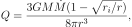
where 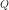 is the loss term in W m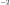 at radius 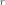, 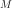 the mass of the central object, 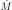 the accretion rate through the disk and 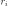 the inner radius. If this energy loss is radiated as a black body, we have
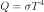
with  the constant of Stefan-Boltzmann and 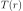
the local temperature of the black body. The total spectrum of such a
disk is then obtained by integration over all radii. We do this
integration numerically. Note that for large ,
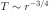.
the constant of Stefan-Boltzmann and 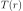
the local temperature of the black body. The total spectrum of such a
disk is then obtained by integration over all radii. We do this
integration numerically. Note that for large ,
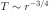.
Warning
A popular disk model (diskbb in XSPEC) assumes this temperature dependence over the full disk. However, we correct it using the factor 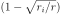 in which corresponds to the torque-free condition at the inner boundary of the disk.
The photon spectrum of the disk is now given by
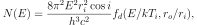
where 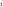 is the inclination of the disk (0 degrees for face-on disk, 90 degrees for an edge-on disk), 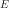 the photon energy, 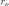 the outer edge of the disk, and 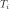 is defined by
(1)¶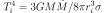
and further the function 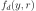 is defined by
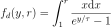
where 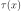 is defined by 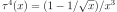.
In addition to calculating the spectrum, the model also allows to calculate the average radius of emission 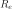 at a specified energy 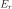. This is sometimes useful for time variability studies (softer photons emerging from the outer parts of the disk).
Given the fit parameters and , using (1) it is straightforward to calculate the product 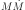. Further note that if 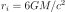, it is possible to find both and , provided the inclination angle is known.
The parameters of the model are:
norm : Normalisation 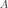 (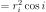), in units of
 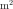. Default value: 1.
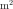. Default value: 1.t : The nominal temperature in keV. Default value: 1
keV.ro : The ratio of outer to inner disk radius, 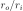ener : Energy at which the average radius of emission
will be calculatedrav : Average radius of all emission at energy
specified by the parameter above. Note that this is not a
free parameter, it is calculated each time the model is evaluated.Recommended citation: Shakura & Sunyaev (1973).